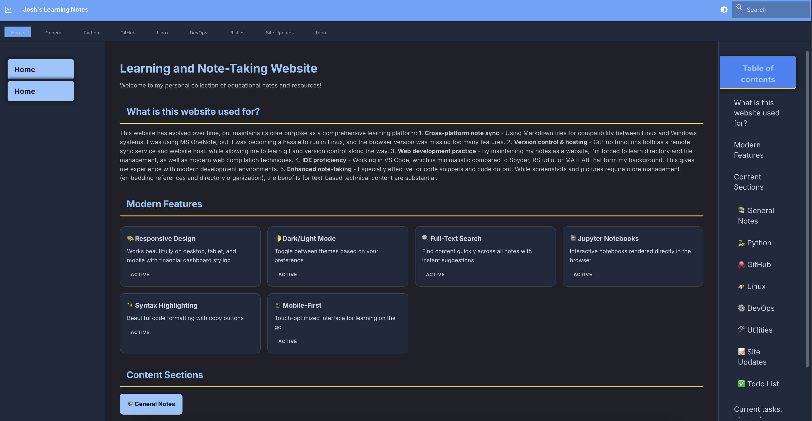

28_8_2025
üìã Back to Site Updates Portal
August 28, 2025
After a long break from this site we have some major overhauls of the style and layout of the website, making the best use of the github pages static hosting capabilities.
Additions:
- docusaurus build tools
- AI (cursor) to manage conversion process
- extensive cursor rules to enforce high quality build pipelines. If
we convert from
.ipynbor.py->.mdand then.md->.html, make sure all the pages can be built without errors.
Historical context In June 2019, the page looked like this:
v1 using mkdocs looked like this: 
Final version is just a bit more refined, but I could probably achieved the same thing with mkdocs